![Slide: LeNet-5. Most widely known CNN architecture, widely used for MNIST (LeCun, 1998). 5 weight layers: 3 CONV and 2 FC, with a pooling layer after the first and second convolutional layers. Main insight: convolutions with learnable parameters can extract spatial features distributed across the entire image. Achieves above 99% accuracy, but MNIST is very simple (grayscale, 10 classes). Diagram 28x28x1, 28x28x6, 14x14x6, 10x10x16, 5x5x16, 120, 84, 10 and a layer table with tanh activations and average pooling](../assets/slides/dl8-p04-lenet-5.png)
Lecture8 (deep_learning_part3_2.pdf, 37 หน้า) · 2603520 Deep Learning
Lesson 7 ให้ชิ้นส่วนของ CNN (convolution, pooling, การนับ parameter). บทนี้ใช้ชิ้นส่วนเหล่านั้นตอบสามคำถาม:
trainable = False)ทุกการคำนวณในบทนี้ใช้สองสูตรเดิม:
$$\begin{gathered}\text{output size} = \left\lfloor \frac{n + 2p - f}{s} \right\rfloor + 1 \\[0.35em] \\[0.35em] \#\text{param}_{\text{conv}} = (f \cdot f \cdot n_C + 1) \cdot n_C'\end{gathered}$$และสูตรของ dense layer: \(n_{in} \cdot n_{out} + n_{out}\). สัญลักษณ์ "3 × 3 + 1(S)" ในรูปของสไลด์หมายถึง kernel 3×3, stride 1, padding "same".
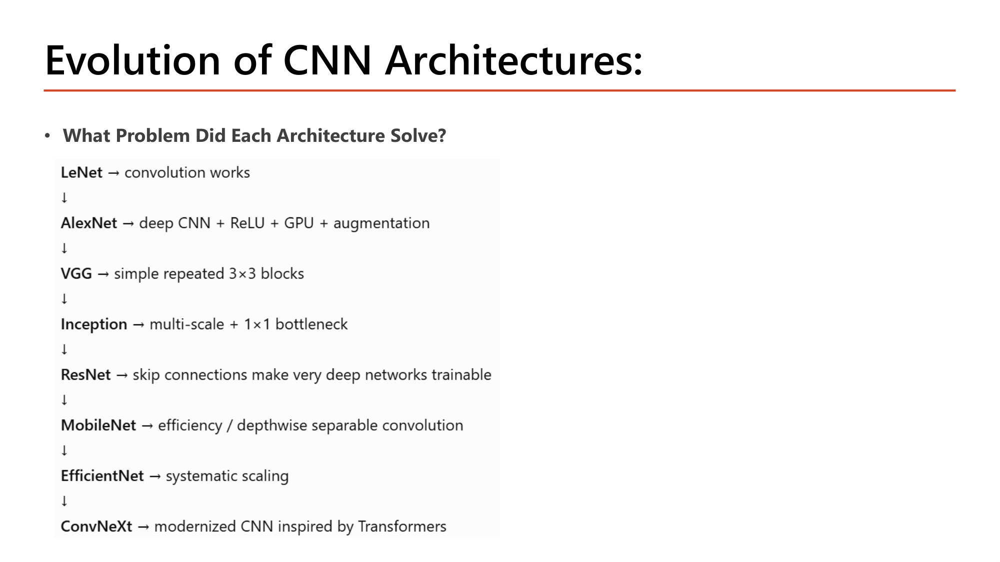
หน้า 2 คือสารบัญของครึ่งแรกของบท. แต่ละสถาปัตยกรรมมีหนึ่งคำตอบต่อคำถาม "What Problem Did Each Architecture Solve?":
| สถาปัตยกรรม | สิ่งที่แก้/พิสูจน์ (ตามสไลด์) | หัวข้อ |
|---|---|---|
| LeNet | convolution works | §2 |
| AlexNet | deep CNN + ReLU + GPU + augmentation | §3 |
| VGG | simple repeated 3×3 blocks | §4 |
| Inception | multi-scale + 1×1 bottleneck | §5 |
| ResNet | skip connections make very deep networks trainable | §6 |
| MobileNet | efficiency / depthwise separable convolution | §7 |
| EfficientNet | systematic scaling | §7 |
| ConvNeXt | modernized CNN inspired by Transformers | §7 |
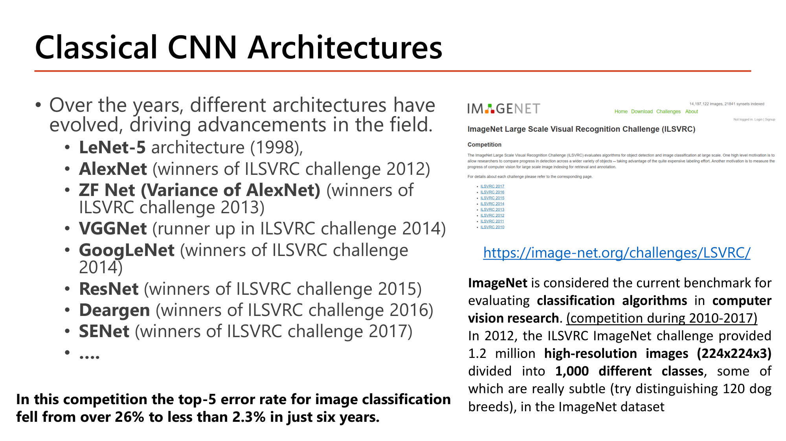
ImageNet เป็น benchmark สำหรับประเมินอัลกอริทึมจำแนกภาพ (การแข่งขันจัดช่วงปี 2010–2017). ในปี 2012 ILSVRC ให้ภาพความละเอียดสูง 1.2 ล้านภาพ (224×224×3) แบ่งเป็น 1,000 class ซึ่งบาง class ต่างกันน้อยมาก (เช่น สุนัข 120 สายพันธุ์). ตัวเลขสำคัญของสไลด์: top-5 error rate ลดจากมากกว่า 26% เหลือน้อยกว่า 2.3% ภายในหกปี.
| ปี | สถาปัตยกรรม | ผล ILSVRC |
|---|---|---|
| 1998 | LeNet-5 | (ก่อนมีการแข่งขัน) |
| 2012 | AlexNet | winner |
| 2013 | ZF Net (variance ของ AlexNet) | winner |
| 2014 | VGGNet | runner up |
| 2014 | GoogLeNet | winner |
| 2015 | ResNet | winner |
| 2017 | SENet | winner |
LeNet-5 เป็น CNN architecture ที่ widely known ที่สุด และใช้กับ MNIST (LeCun, 1998). ประกอบด้วย 5 weight layers: 3 CONV และ 2 FC โดยมี pooling หลัง CONV ชั้นที่หนึ่งและสอง. ตารางในสไลด์ระบุว่าใช้ average pooling และ activation tanh (ไม่ใช่ max pooling และ ReLU แบบปัจจุบัน).
Main insight discovered: แทนที่จะใช้แต่ละ pixel เป็น input แยกกันของ network ขนาดใหญ่ convolutions ที่มี learnable parameters สามารถ extract spatial features ที่กระจายอยู่ทั่วทั้งภาพ. LeNet-5 ได้ accuracy สูงกว่า 99% แต่ MNIST เป็น dataset ที่ very simple เพราะเป็นภาพ grayscale และมีเพียง 10 class.
LeNet-5 มีราว 62,000 parameter. ตารางจาก Hands-on ML ในสไลด์ใช้ input 32×32 และ padding valid ทุกชั้น จึงได้ 32 → 28 → 14 → 10 → 5 → 1 ซึ่งลงท้ายที่ขนาดเดียวกัน.
![Slide: AlexNet (Krizhevsky et al.), a deeper (more hidden layers) and larger (more filters per layer) version of LeNet-5. Won ILSVRC 2012 with top-5 test error 15.3% (2nd place 26.2%). First real deep network that opened the door for the CV community. Trained on 1.2 million images in 1,000 classes; 60 million parameters and 650,000 neurons. Layer table: input 227x227x3, C1 96 maps 55x55 kernel 11x11 stride 4 valid, S2 max pool 27x27, C3 256 maps kernel 5x5 same, S4 13x13, C5 384, C6 384, C7 256 kernel 3x3 same, F8 4096, F9 4096, Out 1000 softmax](../assets/slides/dl8-p05-alexnet.png)
AlexNet (Krizhevsky et al.) คือ LeNet-5 รุ่นที่ deeper (hidden layer มากขึ้น) และ larger (filter ต่อ layer มากขึ้น). ชนะ ILSVRC 2012 ด้วย top-5 test error rate 15.3% ขณะที่อันดับสองได้ 26.2%. เป็น real “deep” network ตัวแรกที่เปิดทาง for CV community ให้พิจารณา CNN อย่างจริงจัง. เทรนบนภาพ 1.2 ล้านภาพ 1,000 class ใช้ 60 million parameters และ 650,000 neurons.
ลำดับขนาด 227 → 55 → 27 → 13 → 6 ตรงกับคอลัมน์ Size ของตาราง. Dense layer ชั้นเดียว (F8) มี 37.8 ล้าน parameter จากทั้งหมดราว 62 ล้าน คือมากกว่าครึ่ง ส่วน C1 มีเพียง 34,944. โค้ดในหน้า 6 ใช้ input_shape=(224,224,3) ซึ่งให้ \(\lfloor 213/4 \rfloor + 1 = 54\) สไลด์จึงกำกับว่า "not totally similar to original".
AlexNet ใช้เทคนิคใหม่หลายอย่างเพื่อให้ deeper (8 weight layers: 5 CONV + 3 FC) กว่า LeNet:
ข้อเสีย: AlexNet มี many hyperparameters to tune (kernel 11, 5, 3; stride 4, 1; padding valid/same ต่างกันทุกชั้น) ทำให้เข้าใจและจัดการยาก. ข้อเสียนี้คือโจทย์ที่ VGG แก้ใน §4.
model = Sequential()
# C1 Convolutional Layer
model.add(Conv2D(filters=96,kernel_size=11,strides=4,activation='relu',input_shape=(224,224,3),padding='valid'))
# S2 Pooling Layer
model.add(MaxPooling2D(pool_size=3,strides=2))
model.add(Lambda(tf.nn.local_response_normalization))
# C3 Convolutional Layer
model.add(Conv2D(filters=256,kernel_size=5,strides=1,activation='relu',padding='same',kernel_regularizer=l2(0.0005)))
# S4 Pooling Layer
model.add(MaxPooling2D(pool_size=3,strides=2))
model.add(Lambda(tf.nn.local_response_normalization))
# C5 Convolutional Layer
model.add(Conv2D(filters=384,kernel_size=3,strides=1,activation='relu',padding='same',kernel_regularizer=l2(0.0005)))
model.add(Lambda(tf.nn.local_response_normalization))
# C6 Convolutional Layer
model.add(Conv2D(filters=384,kernel_size=3,strides=1,activation='relu',padding='same',kernel_regularizer=l2(0.0005)))
model.add(Lambda(tf.nn.local_response_normalization))
# C7 Convolutional Layer
model.add(Conv2D(filters=256,kernel_size=3,strides=1,activation='relu',padding='same',kernel_regularizer=l2(0.0005)))
model.add(Lambda(tf.nn.local_response_normalization))
model.add(MaxPooling2D(pool_size=3,strides=2))
model.add(Flatten())
# FC8 Fully Connected Layer
model.add(Dense(units=4096,activation='relu'))
model.add(Dropout(0.5))
# FC9 Fully Connected Layer
model.add(Dense(units=4096,activation='relu'))
model.add(Dropout(0.5))
# FC10 Output layer with softmax activation
model.add(Dense(units=1000,activation='softmax'))| โค้ด | ทำอะไร |
|---|---|
| Conv2D(filters=96, kernel_size=11, strides=4, activation='relu', input_shape=(224,224,3), padding='valid') | C1: kernel ใหญ่ 11×11 ก้าวทีละ 4 ย่อภาพอย่างรวดเร็วในชั้นแรก. activation เป็น ReLU |
| MaxPooling2D(pool_size=3, strides=2) | หน้าต่าง 3×3 ก้าว 2 ⇒ หน้าต่างซ้อนกัน 1 pixel (overlapping pooling) |
| Lambda(tf.nn.local_response_normalization) | ห่อฟังก์ชันของ TensorFlow เป็น layer ด้วย Lambda. ทำ local response normalization |
| Conv2D(filters=256, kernel_size=5, ..., padding='same', kernel_regularizer=l2(0.0005)) | C3: kernel_regularizer=l2(0.0005) คือ L2 regularization บน weight ของ filter (เทคนิคที่ 3) |
| Conv2D(384, 3) → Conv2D(384, 3) → Conv2D(256, 3) | C5–C7: convolution สามชั้นต่อกันโดยไม่มี pooling คั่น |
| Flatten() | แปลง feature map เป็น vector ก่อนเข้า FC |
| Dense(units=4096, activation='relu') + Dropout(0.5) | FC8, FC9: dropout rate 0.5 หลัง dense แต่ละชั้น (เทคนิคที่ 1) อยู่ในส่วน classification |
| Dense(units=1000, activation='softmax') | FC10: 1,000 class ของ ImageNet |
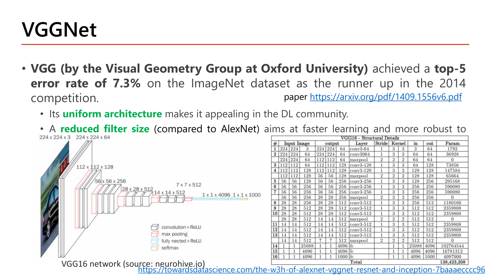
VGG (Visual Geometry Group, Oxford University) ได้ top-5 error rate 7.3% เป็น runner up ปี 2014. จุดเด่นคือ uniform architecture และ reduced filter size (เทียบกับ AlexNet) เพื่อให้เรียนเร็วขึ้นและทนต่อ overfitting มากขึ้น. รูป VGG16 แสดงรูปแบบที่สม่ำเสมอ: ทุกครั้งที่ pooling ลดด้านลงครึ่ง จำนวน channel เพิ่มสองเท่า: 224×224×64 → 112×112×128 → 56×56×256 → 28×28×512 → 14×14×512 → 7×7×512 แล้วต่อด้วย FC 4096, 4096, 1000.
![Slide: VGGNet Key Takeaways. VGG solved the problem of setting up hyperparameters of conv and pooling layers by creating one uniform configuration across the entire network: all conv layers 3x3 filter, stride 1, padding same; all pooling layers pool size 2x2, stride 2. This makes it easy to understand and implement. It improves on AlexNet by replacing large kernel-sized filters (11 and 5) with multiple 3x3 filters one after another; multiple stacked smaller kernels is better than a larger kernel: more nonlinear layers, learn more complex features at a lower cost because of fewer parameters](../assets/slides/dl8-p08-vggnet-key-takeaways.png)
VGG แก้ปัญหาการตั้ง hyperparameter ของ convolutional และ pooling layer ด้วย one uniform configuration ที่ใช้ทั้ง network:
การกำหนดค่าแบบเดียวนี้ทำให้สถาปัตยกรรม easy to understand and implement. VGG ปรับปรุง AlexNet โดยแทน filter ขนาดใหญ่ (11 และ 5 ในสองชั้นแรก) ด้วย multiple 3 × 3 filters ต่อกัน. เหตุผลในสไลด์: ที่ receptive field เท่ากัน multiple stacked smaller kernels ดีกว่า kernel ใหญ่ตัวเดียว เพราะมี nonlinear layer หลายชั้นจึงเพิ่มความลึก ทำให้ learn more complex features at a lower cost จากการที่มี parameter น้อยกว่า.
output หนึ่งค่าของชั้นที่สองมองเห็น 3×3 ค่าของชั้นแรก และแต่ละค่านั้นมองเห็น 3×3 pixel ที่เหลื่อมกันทีละ 1
$$3 + (3 - 1) = 5 \quad\Rightarrow\quad 5 \times 5$$Receptive field เท่ากัน แต่ 3×3 สองชั้นใช้ parameter น้อยกว่า 28% (73,856 เทียบกับ 102,464) และมี ReLU สองครั้งแทนหนึ่งครั้ง. กรณี 7×7 ประหยัดได้ 45%. ค่า 36,928 คือค่าที่ปรากฏในตาราง VGG16 ของสไลด์สำหรับ conv ชั้นที่สอง.
![Slide: Inception and GoogLeNet. Inception tried to solve the same problem as VGGNet (paper Going Deeper with Convolutions, Google, 2014). GoogLeNet won ILSVRC 2014 with top-5 error 6.67%. Hallmark: a deeper neural network with the ability to extract features at varying scales through varying convolutional filter sizes, while improving utilization of computing resources (about 13 million parameters, 12 times less than VGG16). Inception module diagram: input copied to four branches: 1x1 conv; 1x1 then 3x3; 1x1 then 5x5; 3x3 max pool then 1x1; depth concat](../assets/slides/dl8-p09-inception-googlenet.png)
Inception แก้โจทย์เดียวกับ VGGNet. เผยแพร่ในบทความ "Going Deeper with Convolutions" ของนักวิจัย Google (2014). รุ่นหนึ่งคือ GoogLeNet ซึ่งชนะ ILSVRC 2014 ด้วย top-5 error rate 6.67% (ใกล้ระดับมนุษย์). เอกลักษณ์คือการสร้าง deeper neural network ที่
การทำงานของ inception module ตามรูป:
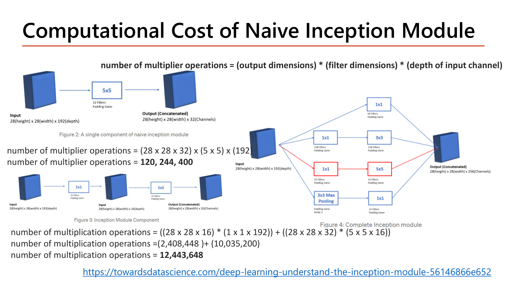
ทุกค่าของ output ต้องคูณ f×f ครั้งต่อ channel ของ input
Output เท่ากัน (28×28×32) แต่การคูณลดลงราว 9.7 เท่า. หมายเหตุ: สไลด์พิมพ์ผลของขั้นที่ 1 ว่า "120, 244, 400" ซึ่งสลับหลัก ค่าที่ถูกจากการคูณ 25,088 × 25 × 192 คือ 120,422,400. ค่า 2,408,448, 10,035,200 และ 12,443,648 ในสไลด์ถูกต้อง.
![Slide: GoogLeNet Architecture contains 22 layers: a series of CONV and POOL layers before inception modules (identical to AlexNet and LeNet); 9 inception modules (2 layers each) with max pooling after every several blocks; the classifier part with fully connected and softmax layers. GoogLeNet was much deeper (wider) than previous CNNs and incurs 10 times fewer parameters than AlexNet (6 from 60 million). Table of layers: inception (3a) output 28x28x256 with 1x1=64, 3x3 reduce=96, 3x3=128, 5x5 reduce=16, 5x5=32, pool proj=32](../assets/slides/dl8-p11-googlenet-architecture.png)
GoogLeNet มี 22 layers: (1) ชุด CONV และ POOL ก่อน inception module เหมือน AlexNet และ LeNet (2) inception module 9 ตัว (ตัวละ 2 layers) มี max pooling คั่นทุกสองสามบล็อกเพื่อลดมิติ (3) ส่วน classifier คือ fully connected และ softmax. GoogLeNet deeper (wider) กว่า CNN ก่อนหน้ามาก แต่ใช้ parameter น้อยกว่า AlexNet 10 เท่า (6 ล้าน จาก 60 ล้าน). Inception มีรุ่นอื่นอีก เช่น Inception-v3 และ Inception-v4.
256 และ 480 ตรงกับคอลัมน์ output size ของตาราง. กว้างและสูงคงเดิม (28×28) เพราะทุกเส้นทางใช้ padding same; การ concatenate เปลี่ยนเฉพาะ depth.
![Slide: ResNet (He et al., Microsoft Research) created residual blocks stacked to form the network; won ILSVRC 2015 with top-5 error 4.49%. Uses skip (shortcut) connections between every two CONV layers, creating residual blocks that address the vanishing gradient problem and allow training networks with 50, 101 and 152 weight layers. Skip connections make it easier to learn an identity mapping. Diagram: plain block outputs h(x); residual block has f(x) = h(x) - x with a skip connection added back; when a layer blocks backpropagation the signal still flows through the skip](../assets/slides/dl8-p13-resnet-residual-block.png)
ResNet (He et al., Microsoft Research) ใช้แนวทางเดียวกับ Inception คือสร้างบล็อกแล้วนำมาซ้อน. ชนะ ILSVRC 2015 ด้วย top-5 error rate 4.49%. ใช้ skip (or shortcut) connections ระหว่างทุกสอง CONV layer. การเชื่อมนี้สร้าง residual blocks ซึ่งทำให้สร้าง network ลึกได้โดยแก้ vanishing gradient problem. จึงเทรน network ที่มี 50, 101 และ 152 weight layers ได้โดยยังมี complexity ต่ำกว่า. Skip connection ยังทำให้ residual block เรียน identity mapping ได้ง่ายเมื่อการแปลงเพิ่มเติมไม่มีประโยชน์.
Backpropagation คูณ gradient ย้อนกลับทีละ layer (Lesson 3). ถ้าตัวคูณแต่ละชั้นเล็กกว่า 1 ผลคูณหลายสิบชั้นจะเข้าใกล้ศูนย์ layer ต้นๆ จึงแทบไม่ถูกอัปเดต (Lesson 5). เช่น \(0.8^{50} \approx 0.000014\).
รูปซ้ายของสไลด์เทียบสองบล็อก. ให้ \(h(x)\) คือฟังก์ชันที่ต้องการให้บล็อกเรียน.
บล็อกเรียนเฉพาะ "ส่วนที่ต้องเพิ่มจาก input" (residual) ไม่ต้องสร้าง output ทั้งหมดใหม่
บล็อกกลายเป็น identity โดยไม่ต้องเรียนอะไร. บล็อกธรรมดาที่ weight เป็นศูนย์ให้ output 0 และตัดสัญญาณทิ้ง
พจน์ "+1" คือเส้นทางลัดที่ gradient ไหลย้อนกลับได้โดยไม่ถูกคูณด้วยค่าเล็ก. รูปขวาของสไลด์แสดงกรณีนี้: layer ที่มีกากบาท (blocking backpropagation) ไม่ทำให้ layer ก่อนหน้าหยุดเรียน เพราะสัญญาณอ้อมผ่าน skip connection.
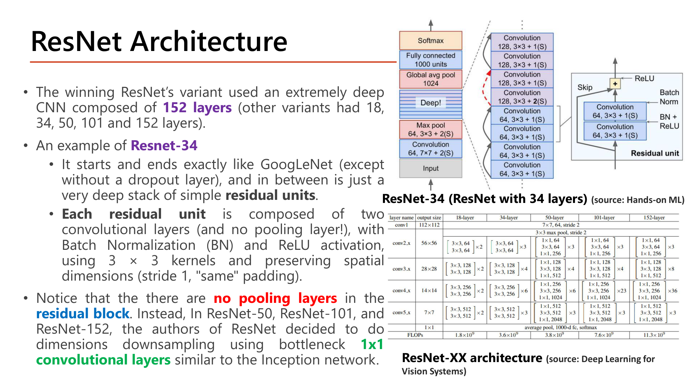
รุ่นที่ชนะใช้ CNN ลึก 152 layers (รุ่นอื่นมี 18, 34, 50, 101). ตัวอย่างในสไลด์คือ Resnet-34:
ตัวเลขในชื่อรุ่นคือจำนวน weight layers. Pooling และ BN ไม่นับ.
![Slide: ResNet Key Takeaways. ResNet builds even deeper networks; skip connections called residual module allow information to flow from earlier to later layers, creating an alternate shortcut path for the gradient; heavy batch normalization for the hidden layers. The breakthrough: training extremely deep networks with hundreds of layers. Table: 1998 LeNet 5 layers; 2012 AlexNet 8 layers 15.3%; 2014 VGGNet 16 layers 7.3%; 2014 Inception (GoogLeNet) 22 layers 6.67%; 2015 ResNet-152 152 layers 4.49%. Note: Inception-v4 merged GoogLeNet and ResNet, top-five error close to 3%](../assets/slides/dl8-p15-resnet-key-takeaways.png)
| Year | CNN | Number of layers | Top-5 error rate |
|---|---|---|---|
| 1998 | LeNet | 5 layers | NA |
| 2012 | AlexNet | 8 layers | 15.3% |
| 2014 | VGGNet | 16 layers | 7.3% |
| 2014 | Inception (GoogLeNet) | 22 | 6.67% |
| 2015 | ResNet-152 | 152 | 4.49% |
จำนวน layer เพิ่มทุกรุ่น (5 → 8 → 16 → 22 → 152) และ error ลดทุกรุ่น (15.3 → 7.3 → 6.67 → 4.49). หมายเหตุในสไลด์: Inception-v4 ของ Google รวมแนวคิดของ GoogLeNet และ ResNet ได้ top-five error ใกล้ 3%.
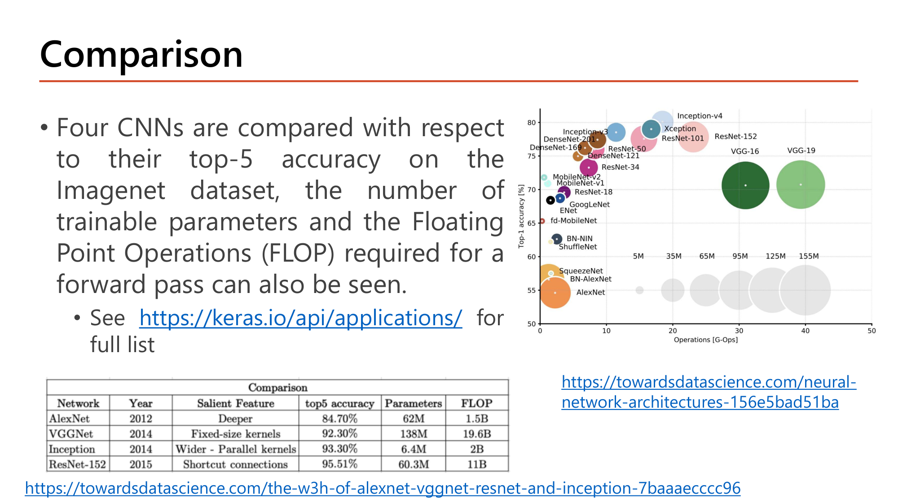
| Network | Year | Salient Feature | top5 accuracy | Parameters | FLOP |
|---|---|---|---|---|---|
| AlexNet | 2012 | Deeper | 84.70% | 62M | 1.5B |
| VGGNet | 2014 | Fixed-size kernels | 92.30% | 138M | 19.6B |
| Inception | 2014 | Wider - Parallel kernels | 93.30% | 6.4M | 2B |
| ResNet-152 | 2015 | Shortcut connections | 95.51% | 60.3M | 11B |
FLOP (Floating Point Operations) คือจำนวนการคำนวณของ forward pass หนึ่งครั้ง. อ่านตารางเป็นการแลกเปลี่ยน: Inception ได้ accuracy สูงกว่า VGGNet 1 จุด (93.30 เทียบกับ 92.30) ด้วย parameter น้อยกว่า \(138 / 6.4 \approx 21.6\) เท่า และ FLOP น้อยกว่า \(19.6 / 2 \approx 9.8\) เท่า. ResNet-152 ลึกกว่า VGG16 เกือบ 10 เท่า (152 เทียบกับ 16 layers) แต่มี parameter น้อยกว่าครึ่ง (60.3M เทียบกับ 138M). ความสัมพันธ์ accuracy กับ error: \(100 - 95.51 = 4.49\%\) ตรงกับ top-5 error ของ ResNet-152.
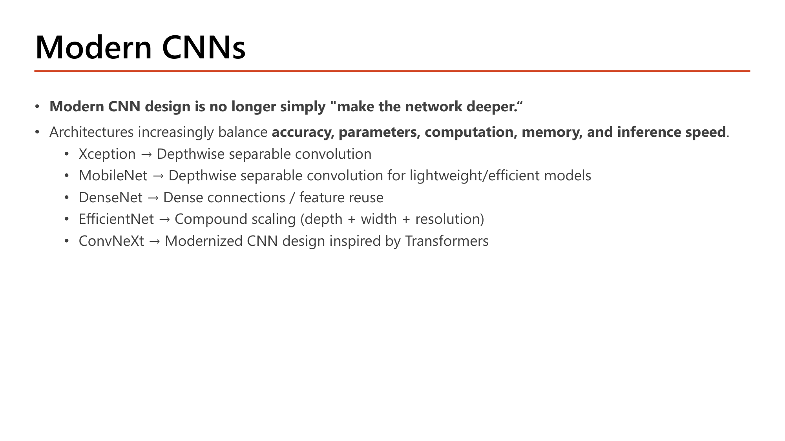
Modern CNN design is no longer simply "make the network deeper." สถาปัตยกรรมรุ่นใหม่ต้องสมดุล accuracy, parameters, computation, memory, and inference speed. ห้ารุ่นและแนวคิดหลัก:
| รุ่น | แนวคิดหลัก |
|---|---|
| Xception | Depthwise separable convolution |
| MobileNet | Depthwise separable convolution for lightweight/efficient models |
| DenseNet | Dense connections / feature reuse |
| EfficientNet | Compound scaling (depth + width + resolution) |
| ConvNeXt | Modernized CNN design inspired by Transformers |
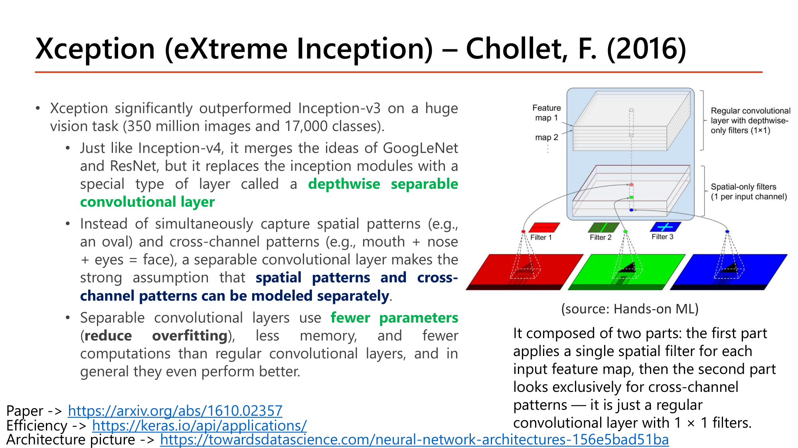
Xception (eXtreme Inception; Chollet, 2016) ทำได้ดีกว่า Inception-v3 อย่างชัดเจนในงานขนาดใหญ่ (350 ล้านภาพ, 17,000 class). เหมือน Inception-v4 ตรงที่รวมแนวคิดของ GoogLeNet และ ResNet แต่แทน inception module ด้วย depthwise separable convolutional layer.
Convolution ปกติจับ spatial pattern (เช่น รูปวงรี) และ cross-channel pattern (เช่น ปาก + จมูก + ตา = หน้า) พร้อมกัน. Separable convolution ตั้งสมมติฐานว่า spatial patterns and cross- channel patterns can be modeled separately จึงแบ่งเป็นสองส่วน:
Separable convolutional layer ใช้ fewer parameters (reduce overfitting) ใช้ memory น้อยกว่า และคำนวณน้อยกว่า convolution ปกติ และโดยทั่วไปทำงานได้ดีกว่าด้วย.
Separable convolution ใช้ parameter น้อยกว่าราว 8.3 เท่าสำหรับ output shape เดียวกัน. ค่า 8,896 คือค่าที่ SeparableConv2D(128, 3) ของ Keras รายงานเมื่อ input มี 64 channel.
![Slide: Other Noteworthy Architectures. MobileNet (2017): streamlined, lightweight and fast models for mobile and web, based on depthwise separable convolutional layers. DenseNet (2016): dense blocks where the output of each layer is fed as input to every layer after it within the same block; layer 4 takes the depthwise concatenation of outputs of layers 1, 2 and 3; few parameters. EfficientNet (2019): compound scaling of depth, width and resolution; neural architecture search. ConvNeXt: pure ConvNet inspired by Vision Transformers, built step by step on ResNet-50, outperforming Swin Transformer](../assets/slides/dl8-p19-other-noteworthy-architectures.png)
| รุ่น | สาระสำคัญตามสไลด์ |
|---|---|
| MobileNet (Howard et al., 2017) | โมเดลที่ออกแบบให้ lightweight และ fast นิยมใช้ใน mobile และ web application. ใช้ depthwise separable convolutional layer เหมือน Xception |
| DenseNet (Huang et al., 2016) | ประกอบด้วย dense block หลายตัว. Densely connected หมายถึง output ของแต่ละ layer ถูกป้อนเป็น input ให้ทุก layer ถัดไปใน block เดียวกัน. เช่น layer 4 รับ depthwise concatenation ของ output จาก layer 1, 2 และ 3. Dense block คั่นด้วย transition layer. ได้ accuracy ดีมากด้วย parameter ค่อนข้างน้อย |
| EfficientNet (Tan & Le, 2019) | วิธี scale CNN อย่างมีหลักการโดยเพิ่ม depth (จำนวน layer), width (จำนวน filter ต่อ layer) และ resolution (ความละเอียดของภาพ input) ร่วมกัน เรียกว่า compound scaling. ใช้ neural architecture search หาสถาปัตยกรรมตั้งต้นบน ImageNet ฉบับย่อ แล้ว scale ขึ้น |
| ConvNeXt (Liu et al.) | ConvNet ล้วนที่ได้แรงบันดาลใจจาก Vision Transformer. ปรับ ResNet-50 ทีละขั้นด้วยแนวคิดจาก transformer จนทำได้ดีกว่า Swin Transformer |
ตัวอย่าง DenseNet เป็นตัวเลข: ถ้าทุก layer ใน block ให้ output 32 channel และ input ของ block มี 64 channel, layer 4 จะรับ \(64 + 32 + 32 + 32 = 160\) channel. การนำ feature เดิมกลับมาใช้ (feature reuse) ทำให้แต่ละ layer ต้องผลิต feature ใหม่เพียงเล็กน้อย.
![Slide: Architecture Design. 1. Build model from scratch: organize into repeated blocks of layers; number of filters should increase as spatial feature maps decrease; deep and narrow is better than broad and shallow; residual connections help train deeper networks; batch normalization after convolution layers can be beneficial; replace Conv2D with SeparableConv2D for parameter efficiency. 2. Use transfer learning, especially when your dataset is small. Note: hyperparameter tuning is very time-consuming; the common use is to build on top of existing CNN architectures](../assets/slides/dl8-p20-architecture-design.png)
เมื่อต้องสร้าง CNN มีสองทางเลือก.
1. Build model from scratch (หลักจากหนังสือ Deep Learning with Python):
Conv2D ด้วย SeparableConv2D ซึ่ง parameter-efficient กว่า อาจช่วย2. Use transfer learning โดยเฉพาะเมื่อ dataset เล็ก.
หมายเหตุ: ใช้ hyperparameter tuning (Lesson 6) หาค่าที่เหมาะได้ แต่ใช้เวลามาก. วิธีที่ใช้ทั่วไปคือสร้างต่อยอดจากสถาปัตยกรรม CNN ที่มีอยู่.
![Slide: Transfer Learning. Instead of training a very large model from scratch, we can reuse pretrained layers with their optimized weights of an existing model previously trained on a large dataset to train our model. Transfer learning is knowledge transfer from a pretrained model to your model. Highly effective on small image datasets, speeds up training considerably, generalizes the learning and avoids overfitting. Model A classifies pictures into many categories (animals, plants, vehicles); Model B classifies specific types of vehicles](../assets/slides/dl8-p21-transfer-learning.png)
แทนการเทรนโมเดลขนาดใหญ่มากจากศูนย์ เราสามารถ reuse a pretrained layers with its optimized weights ของ existing model ที่เทรนบน dataset ขนาดใหญ่มาแล้ว เพื่อเทรน our model. Transfer learning คือการถ่ายโอนความรู้จาก pretrained model มายังโมเดลของเรา. ได้ผลดีมากกับ small image datasets, speed up training considerably และ generalize the learning and avoid overfitting.
ตัวอย่างในสไลด์: Model A จำแนกภาพเป็นหลายประเภท (สัตว์, พืช, ยานพาหนะ และวัตถุอื่น). Model B ต้องจำแนกเฉพาะชนิดของยานพาหนะ (แท็กซี่, ตุ๊กตุ๊ก, รถตู้, สามล้อ). Model A เรียน feature ระดับล่าง (ขอบ, สี, ล้อ, กระจก) มาแล้ว Model B จึงนำ layer เหล่านั้นมาใช้ได้โดยไม่ต้องเรียนใหม่.
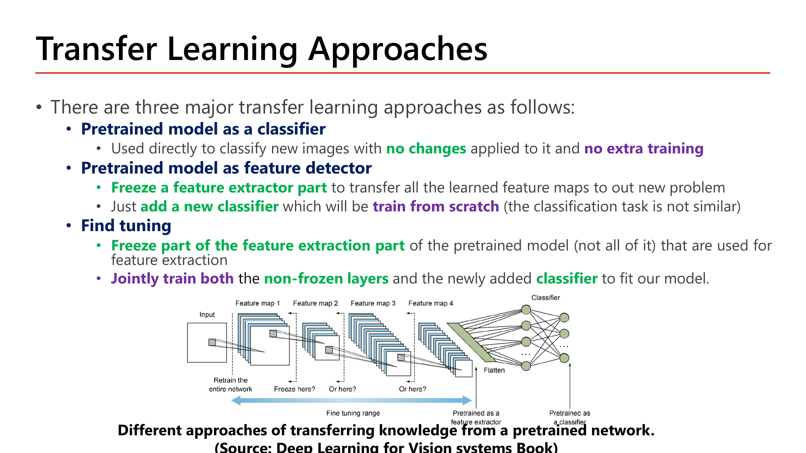
| แนวทาง | ข้อความในสไลด์ | ส่วนที่ถูกเทรน |
|---|---|---|
| Pretrained model as a classifier | ใช้จำแนกภาพใหม่โดยตรง มี no changes และ no extra training | ไม่มี |
| Pretrained model as feature detector | Freeze a feature extractor part เพื่อถ่ายโอน feature map ที่เรียนแล้วทั้งหมด แล้ว add a new classifier ซึ่งจะ train from scratch (งานจำแนกไม่เหมือนเดิม) | classifier ใหม่เท่านั้น |
| Find tuning (fine tuning) | Freeze part of the feature extraction part ของ pretrained model (ไม่ใช่ทั้งหมด) แล้ว Jointly train both non-frozen layers และ classifier ที่เพิ่มใหม่ | layer ท้ายของ feature extractor + classifier ใหม่ |
![Slide: Transfer Learning Guidelines. Input pictures should be the same size as the original task (resize), but smaller inputs reduce computation. Hidden layers: earlier layers extract local, highly generic feature maps (edges, colors, textures), so lower layers can be reused. The output layer should usually be replaced: not useful for the new task and may not have the right number of outputs. Diagram: existing DNN for task A with hidden 1-5; new DNN for similar task B reuses hidden 1-4, hidden 1-2 fixed weights, hidden 3-4 trainable, new output](../assets/slides/dl8-p23-transfer-learning-guidelines.png)
รูปในสไลด์: DNN เดิมของ task A มี Hidden 1–5. DNN ใหม่ของ task B ที่คล้ายกันนำ Hidden 1–4 มาใช้ โดย Hidden 1–2 เป็น fixed weights (frozen) และ Hidden 3–4 เป็น trainable weights. Hidden 5 และ Output เดิมถูกทิ้ง แล้วใส่ Output ใหม่.
![Slide: Transfer Learning Guidelines (2). Choose the appropriate level of tuning based on two factors: domain similarity of source and target domain, and the amount of data (small or large). Small dataset tends to overfit so do less fine tuning. Scenario 1 small and similar: pretrained network as feature extractor. Scenario 2 large and similar: fine tune from activations lately in the model (freeze 60-80%). Scenario 3 small and different: fine tune from activations earlier (freeze 33-50%). Scenario 4 large and different: fine-tune through the entire model](../assets/slides/dl8-p24-transfer-learning-guidelines-2.png)
Choose the appropriate levels of tuning based on two important factors. ได้แก่ (1) domain similarity of the source and target domain และ (2) amount of data ที่มี (small หรือ large). Dataset เล็กมักทำให้ overfit จึง fine tune น้อยลงและพึ่ง source dataset มากขึ้น.
| Scenario | ขนาด dataset | ความคล้ายกับ source | ระดับที่แนะนำ |
|---|---|---|---|
| #1 | small | similar | Pretrained network as a feature extractor |
| #2 | large | similar | Fine tune from activations lately in the model (freeze ประมาณ 60%–80% ของ pretrained model) |
| #3 | small | different | Fine tune from activations earlier in the model (freeze ประมาณ 33%–50%) |
| #4 | large | different | Fine-tune through the entire model |
หลักเบื้องหลังตาราง: ยิ่ง domain ต่างจาก source มาก feature ระดับสูงของโมเดลเดิมยิ่งใช้ไม่ได้ จึงต้องปลด freeze ย้อนไปถึง layer ต้นขึ้น (freeze น้อยลง). ยิ่งข้อมูลมาก ยิ่งเทรน layer จำนวนมากได้โดยไม่ overfit.
![Slide: Transfer Learning Guidelines (3). Use smaller learning rate when fine tuning: pretrained weights are relatively good, do not distort them too quickly. Strategies to help convergence: the new output layer is initialized randomly so there will be large error gradients that may wreck the reused weights; freeze the reused layers during the first few epochs, giving the new layer time to learn reasonable weights; then unfreeze the reused layers (requires compiling the model again) and continue training; after unfreezing reduce the learning rate](../assets/slides/dl8-p25-transfer-learning-guidelines-3.png)
Use smaller learning rate when fine tuning. weight ของ pretrained model ถือว่าดีอยู่แล้ว จึงไม่ต้องการบิดมันเร็วเกินและมากเกิน.
Some strategies to help convergence (if any problem):
trainable หลัง compile โดยไม่ compile ใหม่ ⇒ การเปลี่ยนไม่มีผล. ใช้ learning rate เดิม (เช่น 0.001) ตอน fine-tune ⇒ เสี่ยงทำลาย pretrained weight; ตัวอย่างในสไลด์ลดเหลือ 0.00001.โจทย์: จำแนกภาพสุนัขหรือแมวด้วย pretrained model คือ VGG. Dataset มี 4,000 ภาพ (สุนัขและแมวอย่างละ 2,000). ขั้นแรกตามสไลด์คือ create directory in the structure format that Keras's ImageDataGenerator can read the images from folders containing images: โฟลเดอร์ cats_and_dogs_small มี train, validation, test และแต่ละโฟลเดอร์มีโฟลเดอร์ย่อย cats, dogs. ชื่อโฟลเดอร์ย่อยถูกใช้เป็น label.
train_dataset = image_dataset_from_directory(
train_dir,
image_size = (224,224),
batch_size = 64
)
val_dataset = image_dataset_from_directory(
validation_dir,
image_size = (224,224),
batch_size = 64
)
test_dataset = image_dataset_from_directory(
test_dir,
image_size = (224,224),
batch_size = 64
)
for data_batch, labels_batch in train_dataset.take(1):
print("data batch shape", data_batch.shape)
print("label batch shape", labels_batch.shape)
print("labels_batch", labels_batch)| โค้ด | ทำอะไร |
|---|---|
| image_dataset_from_directory(train_dir, ...) | อ่านภาพจากโฟลเดอร์ แล้วกำหนด label จากชื่อโฟลเดอร์ย่อยตามลำดับตัวอักษร (cats = 0, dogs = 1) |
| image_size = (224,224) | resize ทุกภาพเป็น 224×224 ซึ่งเป็นขนาดที่ VGG16 ใช้ในงานเดิม (guideline หน้า 23) |
| batch_size = 64 | dataset คืนข้อมูลทีละ 64 ภาพ |
| train_dataset.take(1) | ดึง 1 batch มาตรวจ shape |
ผลลัพธ์ที่พิมพ์ในสไลด์: data batch shape (64, 224, 224, 3), label batch shape (64,) และ labels_batch เป็น tensor ของ 0/1 จำนวน 64 ค่า (dtype=int32). Train set มี 2,000 ภาพ จึงมี \(\lceil 2000/64 \rceil = 32\) batch ต่อ epoch (31 batch เต็ม และ batch สุดท้าย \(2000 - 31 \times 64 = 16\) ภาพ).
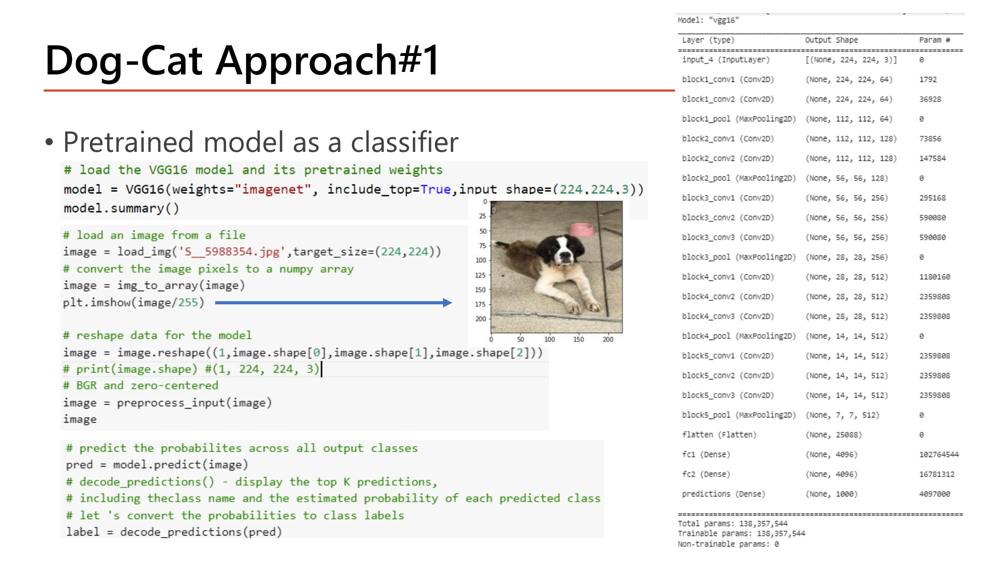
Approach #1: Pretrained model as a classifier. โหลด VGG16 ทั้งตัวรวม classifier 1,000 class แล้วทำนายทันที ไม่มีการเทรน.
# load the VGG16 model and its pretrained weights
model = VGG16(weights="imagenet", include_top=True,input_shape=(224,224,3))
model.summary()
# load an image from a file
image = load_img('S__5988354.jpg',target_size=(224,224))
# convert the image pixels to a numpy array
image = img_to_array(image)
plt.imshow(image/255)
# reshape data for the model
image = image.reshape((1,image.shape[0],image.shape[1],image.shape[2]))
# print(image.shape) #(1, 224, 224, 3)
# BGR and zero-centered
image = preprocess_input(image)
image
# predict the probabilites across all output classes
pred = model.predict(image)
# decode_predictions() - display the top K predictions,
# including theclass name and the estimated probability of each predicted class
# let 's convert the probabilities to class labels
label = decode_predictions(pred)| โค้ด | ทำอะไร |
|---|---|
| VGG16(weights="imagenet", include_top=True, input_shape=(224,224,3)) | โหลดสถาปัตยกรรม VGG16 พร้อม weight ที่เทรนบน ImageNet. include_top=True = รวม classifier (fc1, fc2, predictions) ไว้ด้วย |
| load_img(..., target_size=(224,224)) | โหลดภาพและ resize เป็นขนาดที่โมเดลต้องการ |
| img_to_array(image) | แปลงเป็น numpy array shape (224, 224, 3) ค่า 0–255 |
| image.reshape((1, image.shape[0], image.shape[1], image.shape[2])) | เพิ่มมิติ batch ⇒ (1, 224, 224, 3). โมเดลรับ input เป็น batch เสมอ |
| preprocess_input(image) | ปรับภาพแบบเดียวกับตอนเทรน VGG16: สลับ RGB เป็น BGR และลบค่าเฉลี่ยของแต่ละ channel (zero-centered) |
| model.predict(image) | ได้ความน่าจะเป็น 1,000 ค่า shape (1, 1000) |
| decode_predictions(pred) | แปลงเป็นชื่อ class พร้อมความน่าจะเป็นของ top K (default 5) |
model.summary(): conv base ทั้งหมด (ถึง block5_pool) ให้ output (None, 7, 7, 512); fc1 และ fc2 มี 4,096 node; predictions มี 1,000 nodeClassifier สาม dense layer มี 123.6 ล้าน parameter (89%) ส่วน convolution 13 ชั้นมีเพียง 14.7 ล้าน (11%). ค่า 14,714,688 คือ Total params ที่จะเห็นเมื่อโหลดด้วย include_top=False ใน approach #2. ข้อจำกัดของ approach #1: output เป็น 1,000 class ของ ImageNet (เช่น สายพันธุ์สุนัขและแมว) ไม่ใช่สอง class "dog/cat" ที่โจทย์ต้องการ.
![Slide: Dog-Cat Approach#2 Pretrained model as feature detector. Without data augmentation: get_features_and_labels(dataset) runs preprocess_input and conv_base.predict to extract features of shape (2000, 7, 7, 512); build_model_feature_extractor1: Flatten, Dense(256, relu), Dropout(0.5), Dense(1, sigmoid). With data augmentation: conv_base.trainable = False; build_model_feature_extractor2: Input(shape=(224,224,3)), data_augmentation, Lambda(preprocess_input), conv_base, Flatten, Dense(256), Dropout(0.5), Dense(1, sigmoid). vgg16 summary without top: Total params 14,714,688](../assets/slides/dl8-p28-dog-cat-approach-2.png)
Approach #2: Pretrained model as feature detector. โหลดเฉพาะ conv base (include_top=False) แล้วต่อ classifier ใหม่. สไลด์แสดงสองวิธี.
วิธี A — Without Data Augmentation: ส่งภาพทั้งหมดผ่าน conv base ครั้งเดียวแล้วเก็บ feature เป็น array จากนั้นเทรน classifier เล็กๆ บน feature เหล่านั้น.
# instantiate the VGG16 model.
conv_base = VGG16(weights='imagenet',include_top=False,input_shape=(224,224,3))
# extracting features as NumPy arrays by calling the predict() method of the VGG model on our training, validation, and testing datasets.
def get_features_and_labels(dataset):
all_features = []
all_labels = []
for images, labels in dataset:
# the VGG16 model expects inputs that are preprocessed with the function preprocess_input, which scales pixel values to an appropriate range.
preprocessed_image = preprocess_input(images)
features = conv_base.predict(preprocessed_image)
all_features.append(features)
all_labels.append(labels)
# predict() only expects images, not labels, but our current dataset yields batches that contain both images and their labels.
return np.concatenate(all_features),np.concatenate(all_labels)
train_features, train_labels = get_features_and_labels(train_dataset)
val_features, val_labels = get_features_and_labels(val_dataset)
test_features, test_labels = get_features_and_labels(test_dataset)
train_features.shape # (2000, 7, 7, 512)
def build_model_feature_extractor1():
model = Sequential()
model.add(Flatten(input_shape=(last_layer.output_shape[1:])))
model.add(Dense(256, activation='relu'))
model.add(Dropout(0.5))
model.add(Dense(1, activation='sigmoid'))
return model| โค้ด | ทำอะไร |
|---|---|
| VGG16(weights='imagenet', include_top=False, input_shape=(224,224,3)) | include_top=False ตัด classifier (Flatten, fc1, fc2, predictions) ออก เหลือ conv base ที่จบที่ block5_pool. Total params 14,714,688 |
| for images, labels in dataset: | วนทีละ batch (64 ภาพ) |
| preprocess_input(images) | ปรับ pixel ให้อยู่ในรูปแบบที่ VGG16 คาดหวัง |
| conv_base.predict(preprocessed_image) | forward อย่างเดียว ไม่มีการเทรน. ได้ feature shape (64, 7, 7, 512) ต่อ batch |
| np.concatenate(all_features), np.concatenate(all_labels) | ต่อทุก batch เป็น array เดียว ⇒ train_features.shape = (2000, 7, 7, 512) |
| Flatten(input_shape=(last_layer.output_shape[1:])) | input ของโมเดลใหม่คือ feature (7, 7, 512) ไม่ใช่ภาพ. Flatten ได้ 25,088 ค่า |
| Dense(256, activation='relu') + Dropout(0.5) | classifier ใหม่ที่เทรนจากศูนย์ |
| Dense(1, activation='sigmoid') | binary classification (dog/cat) ⇒ 1 node + sigmoid คู่กับ loss binary_crossentropy |
วิธี B — With Data Augmentation: วิธี A ใช้ augmentation ไม่ได้ เพราะ feature ถูกคำนวณครั้งเดียวจากภาพเดิม. วิธี B จึงวาง conv base ไว้ในโมเดล เพื่อให้ภาพที่ถูก augment ใหม่ทุก epoch ไหลผ่าน conv base ทุกครั้ง และต้อง freeze conv base ด้วย conv_base.trainable = False.
conv_base.trainable = False
def build_model_feature_extractor2():
model = Sequential()
model.add(Input(shape=(224,224,3)))
model.add(data_augmentation)
model.add(Lambda(lambda x: preprocess_input(x)))
model.add(conv_base) #models behave just like layers
model.add(Flatten())
model.add(Dense(256, activation='relu'))
model.add(Dropout(0.5))
model.add(Dense(1, activation='sigmoid'))
return model| โค้ด | ทำอะไร |
|---|---|
| conv_base.trainable = False | freeze ทุก layer ของ conv base. ต้องทำก่อน compile |
| model.add(data_augmentation) | pipeline ของ preprocessing layers จาก Lesson 7 §11 |
| Lambda(lambda x: preprocess_input(x)) | ห่อ preprocess_input เป็น layer เพื่อให้อยู่ใน Sequential model ได้ |
| model.add(conv_base) | ใส่โมเดลทั้งตัวเป็น layer หนึ่งชั้น ("models behave just like layers") |
| Flatten → Dense(256) → Dropout(0.5) → Dense(1, sigmoid) | classifier ชุดเดียวกับวิธี A |
Total params 21,137,729; Trainable 6,423,041; Non-trainable 14,714,688. Dropout, Flatten, Lambda และ data augmentation ไม่มี parameter. วิธี A เทรนเร็วมาก (ราว 1 วินาทีต่อ epoch) เพราะเทรนเพียงสอง dense layer บน feature ที่คำนวณไว้แล้ว; วิธี B ช้ากว่าเพราะทุก batch ต้อง forward ผ่าน conv base. Test accuracy ที่ผู้สอนรันได้: วิธี A 0.974, วิธี B 0.980.
![Slide: Dog-Cat Approach#3 Fine Tuning. conv_base = VGG16(weights='imagenet', include_top=False, input_shape=(224,224,3)). Loop: set_trainable = False; for layer in conv_base.layers: if layer.name == 'block5_conv1': set_trainable = True; layer.trainable set accordingly. Printout shows layers up to block4_pool False and block5_conv1, block5_conv2, block5_conv3, block5_pool True. build_model_fine_tuning1 (without augmentation) and build_model_fine_tuning2 (with augmentation) using the functional API](../assets/slides/dl8-p29-dog-cat-approach-3.png)
Approach #3: Fine Tuning. freeze conv base ถึง block4 และปล่อย block5 (convolution สามชั้นสุดท้าย) ให้เทรนร่วมกับ classifier ใหม่.
#instantiate the VGG16 model.
conv_base = VGG16(weights='imagenet',include_top=False,input_shape=(224,224,3))
conv_base.summary()
set_trainable = False
for layer in conv_base.layers:
if layer.name == 'block5_conv1':
set_trainable = True
if set_trainable:
layer.trainable = True
else:
layer.trainable = False
print("layer name",layer.name, layer.trainable)
def build_model_fine_tuning2():
inputs = Input(shape=(224,224,3))
x = data_augmentation(inputs)
x = preprocess_input(x)
x = conv_base(x)
x = Flatten()(x)
x = Dense(256, activation='relu')(x)
x = Dropout(0.5)(x)
outputs = Dense(1, activation='sigmoid')(x)
model = Model(inputs,outputs)
return model| โค้ด | ทำอะไร |
|---|---|
| set_trainable = False | ธงเริ่มต้น: layer ที่วนเจอก่อนถึงจุดตัดจะถูก freeze |
| for layer in conv_base.layers: | วนตามลำดับจาก input ถึง block5_pool |
| if layer.name == 'block5_conv1': set_trainable = True | เมื่อถึง block5_conv1 พลิกธงเป็น True และคงค่านั้นกับทุก layer ถัดไป |
| layer.trainable = True / False | ตั้งค่าของแต่ละ layer ตามธง |
| print("layer name", layer.name, layer.trainable) | ผลลัพธ์: input ถึง block4_pool เป็น False; block5_conv1, block5_conv2, block5_conv3, block5_pool เป็น True |
| inputs = Input(shape=(224,224,3)) … model = Model(inputs, outputs) | Functional API: เรียกแต่ละ layer เป็นฟังก์ชันบน tensor x แล้วสร้างโมเดลจาก input และ output. build_model_fine_tuning1 (without data augmentation) เหมือนกันแต่ไม่มีบรรทัด data_augmentation |
Trainable 13,502,465; Non-trainable 7,635,264; Total 21,137,729 เท่า approach #2. ในแง่จำนวน layer: 4 จาก 19 layer ของ conv base ถูกปลด (ราว 21%) และ 79% ถูก freeze ซึ่งอยู่ในช่วง 60%–80% ของ scenario #2 เพราะ domain สุนัข/แมวคล้าย ImageNet มาก. ผู้สอน compile ด้วย Adam(learning_rate=0.00001) ซึ่งเล็กกว่า 0.001 ของ approach #2 ถึง 100 เท่า ตาม guideline หน้า 25. Test accuracy: without augmentation 0.972, with augmentation 0.980.
VGG16(weights='imagenet', ______, input_shape=(224,224,3))?image_dataset_from_directory(..., image_size=(224,224), batch_size=64) ข้อใดคือ shape ของ batch ข้อมูลหนึ่ง batch เต็ม และจำนวน batch ต่อ epoch?include_top=True ⇒ 138,357,544 parameter, ทำนาย 1,000 class; include_top=False ⇒ 14,714,688 parameter, output (7, 7, 512)load_img → img_to_array → reshape เป็น (1, 224, 224, 3) → preprocess_input → predict → decode_predictionsconv_base.trainable = False; trainable 6,423,041. Fine tuning: ปลดตั้งแต่ block5_conv1; trainable 13,502,465; learning rate เล็กลงDense(1, activation='sigmoid'); classifier ใช้ Dropout(0.5)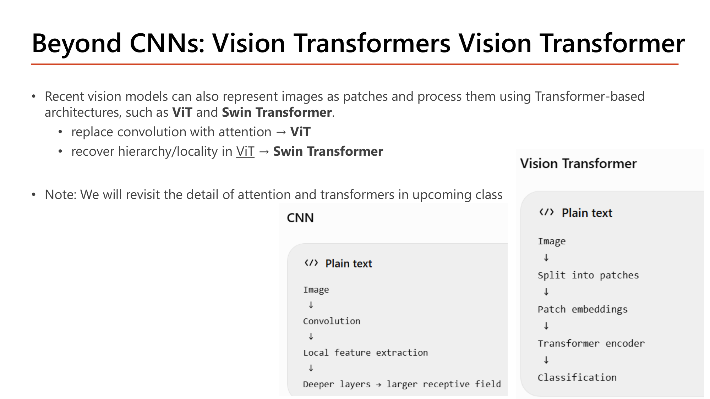
โมเดล vision รุ่นใหม่แทนภาพเป็น patch แล้วประมวลผลด้วยสถาปัตยกรรมแบบ Transformer เช่น ViT และ Swin Transformer:
| CNN | Vision Transformer |
|---|---|
| Image → Convolution → Local feature extraction → Deeper layers → larger receptive field | Image → Split into patches → Patch embeddings → Transformer encoder → Classification |
สไลด์หมายเหตุว่ารายละเอียดของ attention และ transformer จะเรียนในคาบถัดไป. ในบทนี้ให้เข้าใจ self-attention ว่าเป็นกลไกที่ทุก token คำนวณความสัมพันธ์กับ token อื่นแล้วรวมข้อมูลตามน้ำหนักความสัมพันธ์นั้น.
![Slide: Vision Transformer (ViT), Dosovitskiy et al. (2020). Applies the Transformer architecture to image recognition. ViT divides the image into fixed-size patches; a 224x224 image with 16x16 patches gives 14x14 = 196 patches. Each patch is treated like a token, flattened and linearly transformed into a patch embedding; position embeddings are added; the sequence is processed by a Transformer that learns relationships among patches (self-attention). Diagram: patches, linear projection of flattened patches, patch + position embedding with extra class embedding, transformer encoder, MLP head, class](../assets/slides/dl8-p31-vision-transformer.png)
ViT (Dosovitskiy et al., 2020) ใช้ Transformer architecture to image recognition. ขั้นตอนตามสไลด์:
ภาพหนึ่งภาพกลายเป็นลำดับ 196 token (รูปในสไลด์มี class embedding พิเศษอีก 1 ตัวที่ตำแหน่ง 0 สำหรับการจำแนก). ต้นทุนของ self-attention โตตามกำลังสองของจำนวน patch ซึ่งเป็นปัญหาที่ Swin แก้.
![Slide: Key Properties of Vision Transformer. Patch-based representation; no convolution is required in the original ViT; can model relationships between different image regions using self-attention; has less built-in image-specific inductive bias than CNNs; benefits substantially from large-scale pretraining; a pretrained ViT can be transferred/fine-tuned for downstream tasks. Table CNN vs ViT: convolution vs self-attention; strong locality bias vs global interactions; pixels/features organized spatially vs image as patch tokens; hierarchical features naturally vs original ViT less inherently hierarchical](../assets/slides/dl8-p32-vit-key-properties.png)
| CNN | ViT |
|---|---|
| Convolution | Self-attention |
| Strong locality bias | Global interactions |
| Pixels/features organized spatially | Image represented as patch tokens |
| Hierarchical features naturally | Original ViT is less inherently hierarchical |
![Slide: Swin Transformer: Why Modify ViT? ViT performs global self-attention among image patches. Problems: global self-attention becomes computationally expensive as the number of image patches increases (high-resolution images); the original ViT maintains a relatively single-scale representation, unlike hierarchical feature maps of CNNs; multi-scale features are useful for object detection and segmentation. Swin combines Transformer-based feature learning with locality and hierarchical representations](../assets/slides/dl8-p33-swin-why-modify-vit.png)
ViT ทำ global self-attention ระหว่างทุก patch. สไลด์ระบุปัญหาสองข้อ:
คำถามที่ Swin ตอบ: คง vision แบบ Transformer ไว้โดยทำให้ more hierarchical and efficient ได้หรือไม่. Swin รวม Transformer-based feature learning กับ locality และ hierarchical representations.
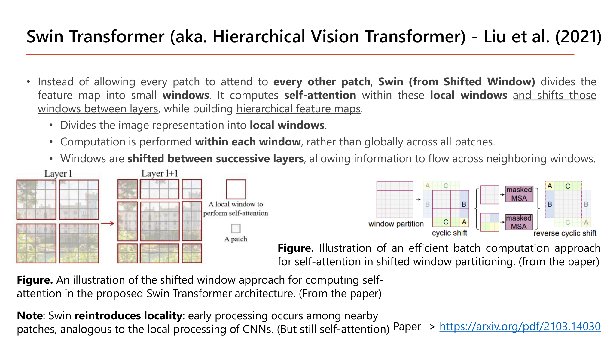
แทนที่จะให้ทุก patch attend ไปยัง every other patch, Swin (from Shifted Window) แบ่ง feature map เป็น windows เล็กๆ. คำนวณ self-attention ภายใน local windows and shifts those windows between layers พร้อมสร้าง hierarchical feature maps:
รูปในสไลด์: Layer l แบ่งเป็น 4 window ปกติ. Layer l+1 เลื่อนขอบ window ไปครึ่งหนึ่ง patch ที่เคยอยู่คนละ window จึงมาอยู่ window เดียวกัน. หมายเหตุ: Swin reintroduces locality คือการประมวลผลช่วงต้นเกิดระหว่าง patch ใกล้กัน คล้าย local processing ของ CNN แต่ยังเป็น self-attention.
ที่ 196 patch window attention ถูกกว่า 4 เท่า. เมื่อ patch เพิ่ม 4 เท่า global attention แพงขึ้น 16 เท่า (กำลังสอง) แต่ window attention แพงขึ้นเพียง 4 เท่า (เชิงเส้น) ตรงกับแถว "High-resolution efficiency" ของตารางหน้า 36.
![Slide: Architecture. As the network becomes deeper: fewer spatial locations / higher-level features. This builds hierarchical, multi-scale feature maps, similar in spirit to CNN feature hierarchies. Designed as a general-purpose backbone for classification, object detection and segmentation. Swin-T diagram: images HxWx3, patch partition H/4 x W/4 x 48, Stage 1 linear embedding and 2 Swin blocks H/4 x W/4 x C, Stage 2 patch merging and 2 blocks H/8 x W/8 x 2C, Stage 3 patch merging and 6 blocks H/16 x W/16 x 4C, Stage 4 patch merging and 2 blocks H/32 x W/32 x 8C; two successive Swin Transformer blocks with W-MSA and SW-MSA](../assets/slides/dl8-p35-swin-architecture.png)
เมื่อ network ลึกขึ้น: fewer spatial locations / higher-level features. สิ่งนี้สร้าง hierarchical, multi-scale feature maps คล้ายลำดับชั้น feature ของ CNN. Swin ออกแบบเป็น general-purpose backbone สำหรับ classification, object detection และ segmentation.
ลำดับ 56 → 28 → 14 → 7 พร้อม channel 96 → 192 → 384 → 768 คือรูปแบบ "เล็กลงแต่ลึกขึ้น" เดียวกับ CNN (VGG16: 112 → 56 → 28 → 14 → 7). Patch Merging ทำหน้าที่แทน pooling. ในรูป (b) บล็อกคู่ใช้ W-MSA (window ปกติ) แล้ว SW-MSA (shifted window) สลับกัน จำนวนบล็อกต่อ stage จึงเป็นเลขคู่ (2, 2, 6, 2).
![Slide: CNN vs ViT vs Swin table. Basic unit: pixels/features, patch tokens, patch tokens. Main operation: convolution, self-attention, window self-attention. Early processing: local, global, local windows. Long-range interaction: builds progressively, direct global attention, progressively via shifted windows. Hierarchical: yes, limited in original ViT, yes. Multi-scale features: yes, not inherent in original ViT, yes. Downsampling: pooling/stride, none, patch merging. High-resolution efficiency: strong, global attention costly, designed to scale efficiently](../assets/slides/dl8-p36-cnn-vs-vit-vs-swin.png)
| CNN | ViT | Swin | |
|---|---|---|---|
| Basic unit | Pixels/features | Patch tokens | Patch tokens |
| Main operation | Convolution | Self-attention | Window self-attention |
| Early processing | Local | Global | Local windows |
| Long-range interaction | Builds progressively | Direct global attention | Progressively via shifted windows |
| Hierarchical | ✓ | Limited in original ViT | ✓ |
| Multi-scale features | ✓ | Not inherent in original ViT | ✓ |
| Downsampling | Pooling / stride etc. | — | Patch Merging |
| High-resolution efficiency | Strong | Global attention costly | Designed to scale efficiently |
อ่านตารางตามคอลัมน์: Swin ใช้ basic unit เดียวกับ ViT (patch tokens) แต่ในหกแถวที่เหลือมีคุณสมบัติตรงกับ CNN (local, progressive, hierarchical, multi-scale, มี downsampling, scale ได้). Swin จึงเป็น Transformer ที่นำข้อดีเชิงโครงสร้างของ CNN กลับมา.
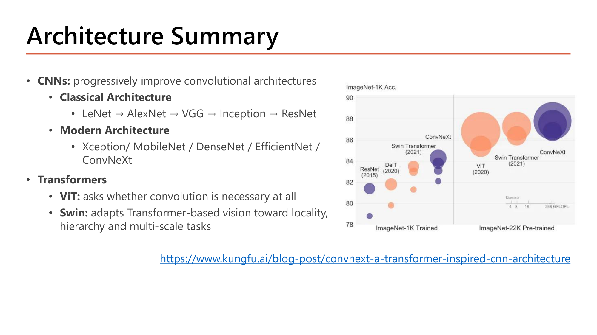
สรุปทั้งบทตามสไลด์:
กราฟในสไลด์แสดง ImageNet-1K accuracy: กลุ่มที่เทรนบน ImageNet-1K อยู่ช่วง 78–84% (ResNet ต่ำสุด, Swin และ ConvNeXt สูงสุด); กลุ่มที่ pretrain บน ImageNet-22K (ViT, Swin, ConvNeXt) ขึ้นไปถึง 85–88%. ทั้งสองข้อสอดคล้องกับที่สไลด์กล่าว: Transformer ได้ประโยชน์จาก large-scale pretraining และ ConvNeXt ซึ่งเป็น CNN ล้วนยังแข่งขันได้.
| หน้า | เนื้อหา | สถานะ |
|---|---|---|
| 1 | ปก Part 3 — Convolutional Neural Network & Transfer Learning | etc — สไลด์ปก (ชื่อวิชา, ภาคเรียน, เวลาเรียน) ไม่มีเนื้อหาวิชา |
| 2 | Evolution of CNN Architectures | ✓ หัวข้อ 1 (รูป + ตารางแผนที่) |
| 3 | Classical CNN Architectures / ILSVRC | ✓ หัวข้อ 1 (รูป + ตารางผู้ชนะ) |
| 4 | LeNet-5 | ✓ หัวข้อ 2 (รูป + คำนวณ 61,706) |
| 5 | AlexNet | ✓ หัวข้อ 3 (รูป + คำนวณ 227→55→27→13→6) |
| 6 | AlexNet Key Takeaways | ✓ หัวข้อ 3 (รูป + โค้ด Keras) |
| 7 | VGGNet | ✓ หัวข้อ 4 (รูป + รูปแบบ channel) |
| 8 | VGGNet Key Takeaways | ✓ หัวข้อ 4 (รูป + คำนวณ 3×3 เทียบ 5×5) |
| 9 | Inception and GoogLeNet | ✓ หัวข้อ 5 (รูป + การทำงานของโมดูล) |
| 10 | Computational Cost of Naive Inception Module | ✓ หัวข้อ 5 (รูป + คำนวณเต็ม + แก้ตัวเลขพิมพ์ผิด) |
| 11 | GoogLeNet Architecture | ✓ หัวข้อ 5 (รูป + คำนวณ 256/480) |
| 12 | Inception Key Takeaways | ✓ หัวข้อ 5 (รูป + สามข้อสรุป) |
| 13 | ResNet (Residual Network) | ✓ หัวข้อ 6 (รูป + h(x) = f(x) + x) |
| 14 | ResNet Architecture | ✓ หัวข้อ 6 (รูป + นับ layer 34/50/152) |
| 15 | ResNet Key Takeaways | ✓ หัวข้อ 6 (รูป + ตาราง 5 รุ่น) |
| 16 | Comparison | ✓ หัวข้อ 6 (รูป + ตาราง + อัตราส่วน) |
| 17 | Modern CNNs | ✓ หัวข้อ 7 (รูป + ตาราง 5 รุ่น) |
| 18 | Xception | ✓ หัวข้อ 7 (รูป + คำนวณ separable) |
| 19 | Other Noteworthy Architectures | ✓ หัวข้อ 7 (รูป + ตาราง + ตัวอย่าง DenseNet) |
| 20 | Architecture Design | ✓ หัวข้อ 7 (รูป + หลักออกแบบ) |
| 21 | Transfer Learning | ✓ หัวข้อ 8 (รูป + Model A/B) |
| 22 | Transfer Learning Approaches | ✓ หัวข้อ 8 (รูป + ตารางสามแนวทาง) |
| 23 | Transfer Learning Guidelines | ✓ หัวข้อ 8 (รูป + input/hidden/output) |
| 24 | Transfer Learning Guidelines (2) | ✓ หัวข้อ 8 (รูป + ตารางสี่ scenario) |
| 25 | Transfer Learning Guidelines (3) | ✓ หัวข้อ 8 (รูป + ลำดับการเทรน) |
| 26 | Example – Dog-Cat Classification | ✓ หัวข้อ 9 (รูป + โค้ด + คำนวณ batch) |
| 27 | Dog-Cat Approach#1 | ✓ หัวข้อ 9 (รูป + โค้ด + คำนวณ 138,357,544) |
| 28 | Dog-Cat Approach#2 | ✓ หัวข้อ 9 (รูป + โค้ดสองวิธี + คำนวณ 6,423,041) |
| 29 | Dog-Cat Approach#3 | ✓ หัวข้อ 9 (รูป + โค้ด + คำนวณ 13,502,465) |
| 30 | Beyond CNNs: Vision Transformers | ✓ หัวข้อ 10 (รูป + CNN เทียบ ViT) |
| 31 | Vision Transformer (ViT) | ✓ หัวข้อ 10 (รูป + คำนวณ 196 patch) |
| 32 | Key Properties of Vision Transformer | ✓ หัวข้อ 10 (รูป + ตาราง) |
| 33 | Swin Transformer: Why Modify ViT? | ✓ หัวข้อ 10 (รูป + สองปัญหา) |
| 34 | Swin Transformer | ✓ หัวข้อ 10 (รูป + คำนวณ window attention) |
| 35 | Architecture (Swin-T) | ✓ หัวข้อ 10 (รูป + คำนวณสี่ stage) |
| 36 | CNN vs ViT vs Swin | ✓ หัวข้อ 10 (รูป + ตารางแปดแถว) |
| 37 | Architecture Summary | ✓ หัวข้อ 10 (รูป + สรุป) |
สงสัยตรงไหน ถามได้เลยในแชท — ผมเป็นผู้สอนของคุณ ถามซ้ำได้ ถามลึกได้ ไม่ต้องเกรงใจ.